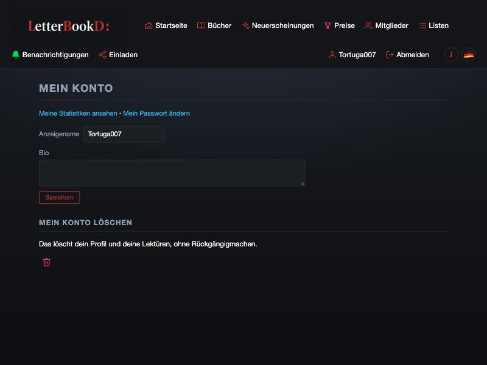

Mein Konto
Wozu es dient: Deine Identität im Club anpassen (Name, Bio) und die Sicherheit verwalten (Passwort). Außerdem kannst du deine Lesestatistiken einsehen und dein Konto endgültig löschen, falls du austreten möchtest.

Ablauf
Oben findest du zwei Schnelllinks: „Meine Statistiken ansehen“ (persönliche Statistikseite) und „Passwort ändern“. Darunter steht das Profilformular: „Anzeigename“ (dein öffentlicher Name) und „Bio“ (Freitext, auf deinem Profil für Mitglieder deiner Clubs sichtbar). Klicke auf „Speichern“, um die Änderungen zu übernehmen.
Weiter unten findest du den Abschnitt „Mein Konto löschen“: Ein Papierkorb-Symbol öffnet eine Bestätigung. Die Löschung ist endgültig: Profil, Lektüren, Rezensionen und Listen werden vollständig entfernt.
Aktionsketten
Jede Zeile beschreibt einen Auslöser in der Oberfläche, das sich öffnende Modal/Formular und den erzielten Effekt.
| Auslöser | Modal / Felder | Effekt |
|---|---|---|
| Link „Meine Statistiken ansehen“ | — | Öffnet deine Statistikseite: Anzahl gelesener Bücher, Durchschnittsnote, Lieblingsautoren, Entwicklung im Zeitverlauf. |
| Link „Passwort ändern“ | allauth-Formular: bisheriges Passwort + neues Passwort (zweimal). | Ersetzt dein Passwort. Andere geöffnete Sitzungen bleiben gültig. |
| Schaltfläche „Speichern“ (Profilformular) | Anzeigename (dein Pseudonym, Pflichtfeld), Bio (Freitext, optional). | Aktualisiert dein Profil. Die Änderungen erscheinen überall, wo dein Name angezeigt wird. |
| Papierkorb-Symbol unter „Mein Konto löschen“ | Bestätigungsformular (eigene Seite). | Löscht dein Konto endgültig, inklusive Lektüren, Rezensionen, Listen und Einladungen. Die Aktion ist nicht rückgängig zu machen. |